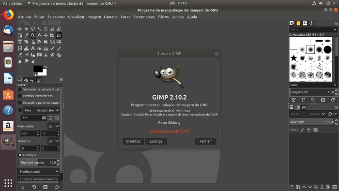
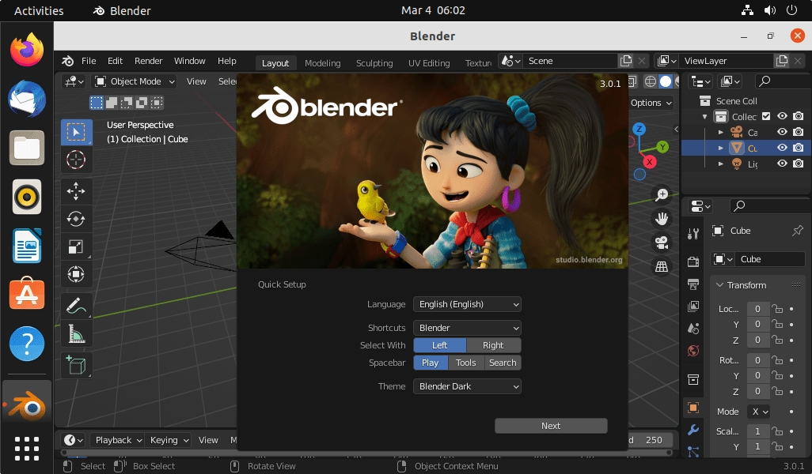
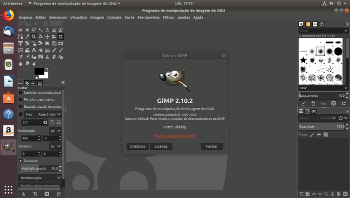
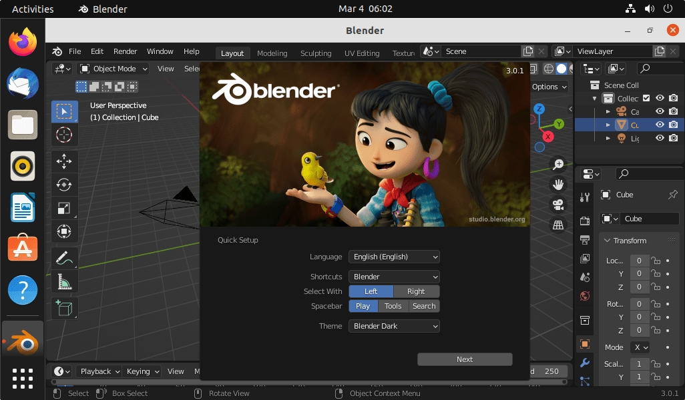

GIMP
Editor de imagens similar ao Photoshop, mas gratuito.
Inkscape
Software para criação de gráficos vetoriais, como o Adobe Illustrator.

Blender
Ferramenta profissional para modelagem 3D, animação e renderização.
Editor de imagens similar ao Photoshop, mas gratuito.
Software para criação de gráficos vetoriais, como o Adobe Illustrator.
Ferramenta profissional para modelagem 3D, animação e renderização.
